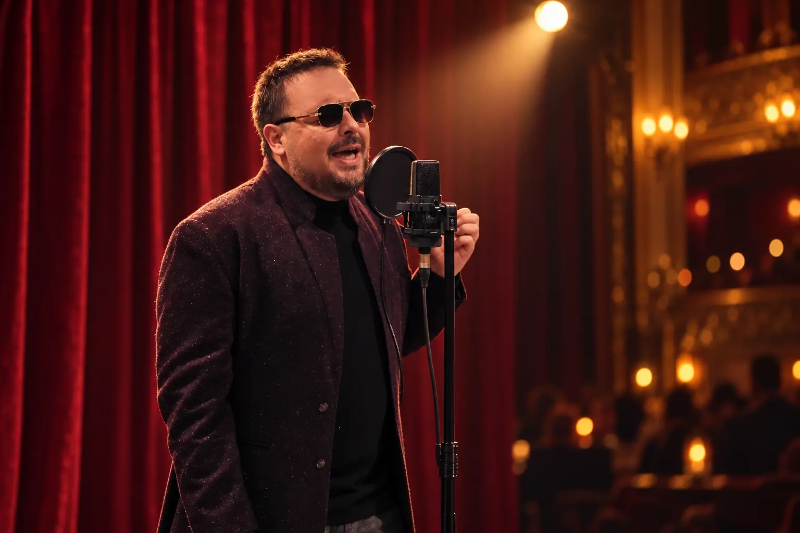

Pop · Rock · Etno-pop · Folk-pop
Pesme koje ostaju.
Poznate melodije, snažna emocija i glas koji ih vraća u život.
Slušaj
Muzika koja nosi priču
Pet pažljivo snimljenih pesama. Izaberi numeru i prepusti se zvuku.
O umetniku
Glas poznatih melodija u novom svetlu
Igor Stellar je umetničko ime pevača Igora Vlahovića.
Njegov repertoar spaja domaći pop i rok sa etno-pop i folk-pop zvukom, a u planu su i pažljivo odabrani međunarodni klasici. U središtu njegovog izvođenja nalaze se melodija, tekst i emocija — pesme koje publika prepoznaje već u prvim taktovima.
Otvoren je za nastupe svuda gde ga publika pozove: od intimnih večeri i restorana do većih proslava i događaja.
Pozovi Igora za nastupPoseban projekat
FOR YOU COVERS
Serija posvećena osobi koju Igor najviše voli — sazdana od pesama koje je ta osoba volela.
Od intimnih akustičnih postava do punih aranžmana u različitim stilovima, svaka obrada nosi istu nit: ličnu emociju pretočenu u glas.
Cela serija na YouTube-uGalerija
Na sceni i između pesama
Rezervacije
Neka muzika bude deo vaše večeri.
Za nastupe, proslave i posebne događaje kontaktirajte Igora direktno.